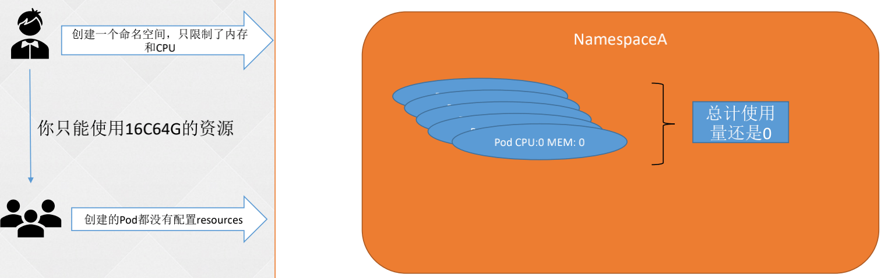
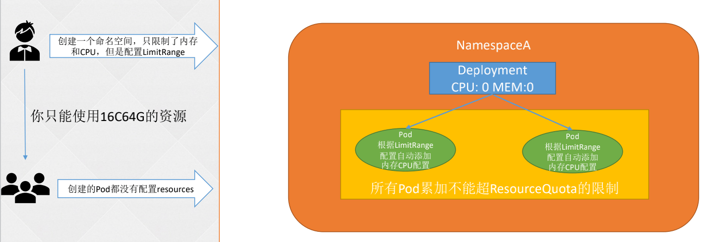

Kubernetes: k8s 进阶篇-准入控制-策略
- TAGS: Kubernetes
高级调度-准入控制-策略
https://kubernetes.io/docs/concepts/policy/
QoS 服务质量
生产可能性保障
Resources 配置的重要性
如果 pod 没有配置 resources 资源限制，它是感知不到节点资源限制的，可以随意分配到一个节点上。如果节点上没有资源了，这个 pod 可能被驱逐。oom， cpu 过高。
Resources 也并非万能
node01 4C8G：
- pod1：request 2C4G, limit 2C4G –> 2C3.8G
- pod2：request 1C2G, limit 2C4G –> 2C3G
- pod3：request 1C2G, limit 2C4G –> 1C4G
节点上的 pod 运行一段时间资源使用量，可能 OOM
如果节点上的资源不够了就按 Qos 服务质量来清理 pod。
服务质量QoS
- Guaranteed：最高服务质量，当宿主机内存不够时，会先 kill 掉 QoS 为 BestEffort 和 Burstable的Pod，如果内存还是不够，才会 kill 掉 QoS 为 Guaranteed，该级别 Pod 的资源占用量一般比较明确，即 requests 的 cpu 和 memory 和 limits 的 cpu 和 memory 配置的一致。
- Burstable： 服务质量低于 Guaranteed，当宿主机内存不够时，会先 kill 掉 QoS 为 BestEffort 的 Pod，如果内存还是不够之后就会 kill 掉 QoS 级别为 Burstable 的 Pod，用来保证 QoS 质量为 Guaranteed 的 Pod，该级别 Pod 一般知道最小资源使用量，但是当机器资源充足时，还是想尽可能的使用更多的资源，即 limits 字段的 cpu 和 memory 大于 requests 的 cpu 和 memory 的配置。
- BestEffort：尽力而为，当宿主机内存不够时，首先 kill 的就是该 QoS 的 Pod，用以保证 Burstable 和 Guaranteed 级别的 Pod 正常运行。
如果对 pod 资源把握很好，request 和 limit 可以设置成不一样，如 request 100m/100Mi limit 2C/3G 可以让单个节点容纳更多 pod，这会省去部分节点成本。
范例
实现QoS为Guaranteed的Pod
- Pod中的每个容器必须指定limits.memory和requests.memory，并且两者需要相等；
- Pod中的每个容器必须指定limits.cpu和limits.memory，并且两者需要相等。
实现QoS为Burstable的Pod
- Pod不符合Guaranteed的配置要求；
- Pod中至少有一个容器配置了requests.cpu或requests.memory。
实现QoS为BestEffort的Pod
- 不设置resources参数
java与Qos
apiVersion: apps/v1
kind: Deployment
metadata:
name: game
spec:
...
template:
metadata:
spec:
containers:
- args:
- -Dfile.encoding=utf-8
- -server
- -XX:+UnlockExperimentalVMOptions
- -XX:+UseG1GC
- -XX:+ExitOnOutOfMemoryError
- -XX:+HeapDumpOnOutOfMemoryError
- -XX:InitialRAMPercentage=75.0
- -XX:MinRAMPercentage=75.0
- -XX:MaxRAMPercentage=75.0
- -XX:HeapDumpPath=/opt/app/logs/
- -Xloggc:./logs/gc.log
- -Dserver.status=WORKING
- -jar
- rummy-game.jar
command:
- java
resources:
limits:
cpu: 1
memory: 2Gi
requests:
cpu: 500m
memory: 1Gi
在Kubernetes的Pod中，Java程序使用 -XX:InitialRAMPercentage、-XX:MinRAMPercentage 和 -XX:MaxRAMPercentage 参数时，这些参数是基于容器的内存限制（limits）来计算的，而不是基于请求（requests）。
解释： -XX:InitialRAMPercentage：设置JVM启动时的初始堆内存占容器内存限制的百分比。 -XX:MinRAMPercentage：设置JVM的最小堆内存占容器内存限制的百分比。 -XX:MaxRAMPercentage：设置JVM的最大堆内存占容器内存限制的百分比.
具体影响：
内存限制（limits）：这些参数会根据Pod的内存限制来计算JVM的内存使用。例如，如果Pod的内存限制为2Gi（2048MB），并且设置了 -XX:MaxRAMPercentage=75.0，那么JVM的最大堆内存将被设置为2048MB的75%，即1536MB。
内存请求（requests）：主要用于Kubernetes的调度和资源分配，但不会直接影响JVM的内存参数设置。
ResourceQuota 资源配额
资源配额提供了限制每个命名空间的聚合资源消耗的约束。
官方文档：https://kubernetes.io/docs/concepts/policy/resource-quotas/
资源配额的重要性
管理资源分配情况，避免资源不够和大量废弃资源不回收问题。对名称空间进行配置、限额。
ResourceQuota配置
apiVersion: v1
kind: ResourceQuota
metadata:
name: resource-test
labels:
app: resourcequota
spec:
hard:
pods: 50
requests.cpu: 0.5
requests.memory: 512Mi
limits.cpu: 5
limits.memory: 16Gi
configmaps: 20
requests.storage: 40Gi
persistentvolumeclaims: 20
replicationcontrollers: 20
secrets: 20
services: 50
services.loadbalancers: "2"
services.nodeports: "10"
- pods：限制最多启动Pod的个数
- requests.cpu：限制最高CPU请求数
- requests.memory：限制最高内存的请求数
- limits.cpu：限制最高CPU的limit上限
- limits.memory：限制最高内存的limit上限
范例-ResourceQuot（对名称空间进行配置、限额）
配置内存和 CPU 配额
# 1、创建命名空间，以便本练习中创建的资源和集群的其余部分相隔离。 [root@k8s-master01 ~]# kubectl create namespace quota-mem-cpu-example namespace/quota-mem-cpu-example created # 2、创建 ResourceQuota [root@k8s-master01 ~]# vim quota-mem-cpu.yaml apiVersion: v1 kind: ResourceQuota metadata: name: mem-cpu-demo spec: hard: requests.cpu: "1" requests.memory: 1Gi limits.cpu: "2" limits.memory: 2Gi # 3、创建 ResourceQuota [root@k8s-master01 ~]# kubectl apply -f quota-mem-cpu.yaml -n quota-mem-cpu-example resourcequota/mem-cpu-demo created # 4、查看 ResourceQuota 详情： [root@k8s-master01 ~]# kubectl get resourcequota mem-cpu-demo --namespace=quota-mem-cpu-example --output=yaml # 跟我们配置的一样 spec: hard: limits.cpu: "2" limits.memory: 2Gi requests.cpu: "1" requests.memory: 1Gi
ResourceQuota 在 quota-mem-cpu-example 命名空间中设置了如下要求：
- 每个容器必须有内存请求和限制，以及 CPU 请求和限制。
- 所有容器的内存请求总和不能超过1 GiB。
- 所有容器的内存限制总和不能超过2 GiB。
- 所有容器的 CPU 请求总和不能超过1 cpu。
- 所有容器的 CPU 限制总和不能超过2 cpu。
也就是在名称空间 quota-mem-cpu-example种创建Pod，必须遵守我们在上面定义的要求
创建 Pod
cat > quota-mem-cpu-pod.yaml << EFO
apiVersion: v1
kind: Pod
metadata:
name: quota-mem-cpu-demo
spec:
containers:
- name: quota-mem-cpu-demo-ctr
image: nginx
resources:
limits:
memory: "800Mi"
cpu: "800m"
requests:
memory: "600Mi"
cpu: "400m"
EFO
# create Pod
kubectl apply -f quota-mem-cpu-pod.yaml --namespace=quota-mem-cpu-example
# 查看配额，能看到用了多少
[root@k8s-master01 ~]# kubectl get resourcequota mem-cpu-demo --namespace=quota-mem-cpu-example --output=yaml
spec:
hard:
limits.cpu: "2"
limits.memory: 2Gi
requests.cpu: "1"
requests.memory: 1Gi
status:
hard:
limits.cpu: "2"
limits.memory: 2Gi
requests.cpu: "1"
requests.memory: 1Gi
used:
limits.cpu: 800m
limits.memory: 800Mi
requests.cpu: 400m
requests.memory: 600Mi
尝试创建第二个 Pod
[root@k8s-master01 ~]# cat quota-mem-cpu-pod-2.yaml
apiVersion: v1
kind: Pod
metadata:
name: quota-mem-cpu-demo-2
spec:
containers:
- name: quota-mem-cpu-demo-2-ctr
image: redis
resources:
limits:
memory: "1Gi"
cpu: "800m"
requests:
memory: "700Mi"
cpu: "400m"
# 尝试创建
[root@k8s-master01 ~]# kubectl apply -f quota-mem-cpu-pod-2.yaml --namespace=quota-mem-cpu-example
Error from server (Forbidden): error when creating "quota-mem-cpu-pod-2.yaml": pods "quota-mem-cpu-demo-2" is forbidden: exceeded quota: mem-cpu-demo, requested: requests.memory=700Mi, used: requests.memory=600Mi, limited: requests.memory=1Gi
# 第二个 Pod 不能被创建成功。输出结果显示创建第二个 Pod 会导致内存请求总量超过内存请求配额。
# 删除你的命名空间：
kubectl delete namespace quota-mem-cpu-example
配置命名空间下 Pod 配额
如何配置一个命名空间下可运行的 Pod 个数配额？
# 1、创建一个命名空间 kubectl create namespace quota-pod-example # 2、创建 ResourceQuota，指定改ns只可以创建2个pod apiVersion: v1 kind: ResourceQuota metadata: name: pod-demo spec: hard: pods: "2" # 3、apply ResourceQuota kubectl apply -f quota-pod.yaml --namespace=quota-pod-example # 4、查看资源配额的详细信息： kubectl get resourcequota pod-demo --namespace=quota-pod-example --output=yaml # 5、创建Deployment，且replicas是3，那么肯定只有2个Pod能正常运行！自己去试试吧 apiVersion: apps/v1 kind: Deployment metadata: name: pod-quota-demo spec: selector: matchLabels: purpose: quota-demo replicas: 3 template: metadata: labels: purpose: quota-demo spec: containers: - name: pod-quota-demo image: nginx
中文官网文档：https://kubernetes.io/zh/docs/concepts/policy/limit-range/
LimitRange 限制范围
LimitRange 是一种用于限制命名空间中(到容器组或容器的)资源分配的策略。
官方文档: https://kubernetes.io/docs/concepts/policy/limit-range/
为什么需要 LimitRange
只有 ResourceQuota 是不够的

只有 ResourceQuota 限制资源使用量，如果 pod 没有配置 resources 是没用的，永远达不到资源配额。
LimitRange做了什么

如果 pod cpu 和内存没限制可以自动添加 LimitRange 的默认值。
LimitRange配置
一个 LimitRange（限制范围） 对象提供的限制能够做到：
- 在一个命名空间中实施对每个 Pod 或 Container 最小和最大的资源使用量的限制。
- 在一个命名空间中实施对每个 PersistentVolumeClaim 能申请的最小和最大的存储空间大小的限制。
- 在一个命名空间中实施对一种资源的申请值和限制值的比值的控制。
- 设置一个命名空间中对计算资源的默认申请/限制值，并且自动的在运行时注入到多个 Container 中。
对新启动的 pod 生效。不更改 deployment 这类而更改 pod。
LimitRange配置示例：默认的requests和limits
apiVersion: v1
kind: LimitRange
metadata:
name: cpu-mem-limit-range
spec:
limits:
- default:
cpu: 1
memory: 512Mi
defaultRequest:
cpu: 0.5
memory: 256Mi
type: Container
- default：默认limits配置
- defaultRequest：默认requests配置
LimitRange配置示例：requests和limits的范围
apiVersion: v1
kind: LimitRange
metadata:
name: cpu-mem-min-max-demo-lr
spec:
limits:
- max:
cpu: "800m"
memory: 1Gi
min:
cpu: "200m"
memory: 500Mi
type: Container
- max：内存CPU的最大配置
- min：内存CPU的最小配置
LimitRange配置示例：限制申请存储空间的大小
apiVersion: v1
kind: LimitRange
metadata:
name: storagelimits
spec:
limits:
- type: PersistentVolumeClaim
max:
storage: 2Gi
min:
storage: 1Gi
- max：最大PVC的空间
- min：最小PVC的空间
范例-LimitRange 的配置文件：
apiVersion: v1
kind: LimitRange
metadata:
name: cpu-min-max-demo-lr
spec:
limits:
- max:
cpu: "800m"
min:
cpu: "200m"
type: Container
- type: PersistentVolumeClaim
max:
storage: 2Gi
min:
storage: 1Gi
# 输出结果显示 CPU 的最小和最大限制符合预期。但需要注意的是，尽管你在 LimitRange 的配置文件中你没有声明默认值，默认值也会被自动创建。
limits:
- default:
cpu: 800m
defaultRequest:
cpu: 800m
max:
cpu: 800m
min:
cpu: 200m
type: Container
- type: PersistentVolumeClaim
max:
storage: 2Gi
min:
storage: 1Gi
现在不管什么时候在 constraints-cpu-example 命名空间中创建容器，Kubernetes 都会执行下面这些步骤：
- 如果容器没有声明自己的 CPU 请求和限制，将为容器指定默认 CPU 请求和限制。
- 核查容器声明的 CPU 请求确保其大于或者等于 200 millicpu。
- 核查容器声明的 CPU 限制确保其小于或者等于 800 millicpu。
说明：当创建 LimitRange 对象时，你也可以声明大页面和 GPU 的限制。 当这些资源同时声明了 'default' 和 'defaultRequest' 参数时，两个参数值必须相同。
为 Pod 或容器配置安全上下文
https://kubernetes.io/zh-cn/docs/concepts/security/cloud-native-security/
cat <<\EOF> security-context.yaml apiVersion: v1 kind: Pod metadata: name: security-context-demo spec: securityContext: runAsUser: 1000 runAsGroup: 3000 fsGroup: 2000 supplementalGroups: [4000] volumes: - name: sec-ctx-vol emptyDir: {} containers: - name: sec-ctx-demo image: busybox:1.28 command: [ "sh", "-c", "sleep 1h" ] volumeMounts: - name: sec-ctx-vol mountPath: /data/demo securityContext: allowPrivilegeEscalation: false EOF kubectl apply -f https://k8s.io/examples/pods/security/security-context.yaml kubectl get pod security-context-demo kubectl exec -it security-context-demo -- sh [root@jump tmp]# kubectl exec -it security-context-demo -- sh / $ ps #显示进程以用户 1000 运行，即 runAsUser 所设置的值 PID USER TIME COMMAND 1 1000 0:00 sleep 1h 13 1000 0:00 sh 19 1000 0:00 ps / $ cd /data/ /data $ ls -l #显示 /data/demo 目录的组 ID 为 2000，即 fsGroup 的设置值 total 0 drwxrwsrwx 2 root 2000 6 Jun 23 13:48 demo /data $ cd demo/ /data/demo $ echo hello > testfile /data/demo $ ls -l #显示 testfile 的组 ID 为 2000，也就是 fsGroup 所设置的值 total 4 -rw-r--r-- 1 1000 2000 6 Jun 23 13:50 testfile /data/demo $ id uid=1000 gid=3000 groups=2000,3000,4000 /data/demo $ exit
apiVersion: apps/v1
kind: Deployment
metadata:
labels:
app.kubernetes.io/name: kube-state-metrics
app.kubernetes.io/version: 2.15.0
name: kube-state-metrics
namespace: monitoring
spec:
replicas: 1
selector:
matchLabels:
app.kubernetes.io/name: kube-state-metrics
template:
metadata:
labels:
app.kubernetes.io/name: kube-state-metrics
app.kubernetes.io/version: 2.15.0
spec:
automountServiceAccountToken: true
containers:
- image: registry.k8s.io/kube-state-metrics/kube-state-metrics:v2.15.0
livenessProbe:
httpGet:
path: /livez
port: http-metrics
initialDelaySeconds: 5
timeoutSeconds: 5
name: kube-state-metrics
ports:
- containerPort: 8080
name: http-metrics
- containerPort: 8081
name: telemetry
readinessProbe:
httpGet:
path: /readyz
port: telemetry
initialDelaySeconds: 5
timeoutSeconds: 5
securityContext:
allowPrivilegeEscalation: false
capabilities:
drop:
- ALL
readOnlyRootFilesystem: true
runAsNonRoot: true
runAsUser: 65534
seccompProfile:
type: RuntimeDefault
nodeSelector:
kubernetes.io/os: linux
serviceAccountName: kube-state-metrics
NetworkPolicies 网络策略
网络策略是允许 pod 组相互通信以及与其他网络端点通信的规范。
官方文档：https://kubernetes.io/docs/concepts/services-networking/network-policies/
PodDisruptionBudgets 中断预算
Pod 中断预算可让应用程序拥有者为复制的应用程序创建对象，以确保一定数量或百分比的已分配标签 Pod 在任何时候都不会被自愿驱逐。
官方文档：https://kubernetes.io/docs/tasks/run-application/configure-pdb/
PodSecurityPolicies 安全策略
Pod 安全策略允许对 Pod 创建和更新进行精细授权。
官方文档：https://kubernetes.io/docs/concepts/security/pod-security-policy/